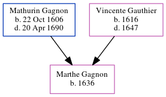

Marthe Gagnon 1636 -
[ Home ] | [ Calendar ] | [ Surnames Index ] | [ Census Index ] | [ Family History ]The child of Mathurin Gagnon and Vincente Gauthier, Marthe Gagnon was born in France in 1636.
Parents
- Mathurin was born on Oct 22, 1606
- Vincente was born in 1616
Family Tree
Generated by ged2site. Last updated on Jun 6, 2024